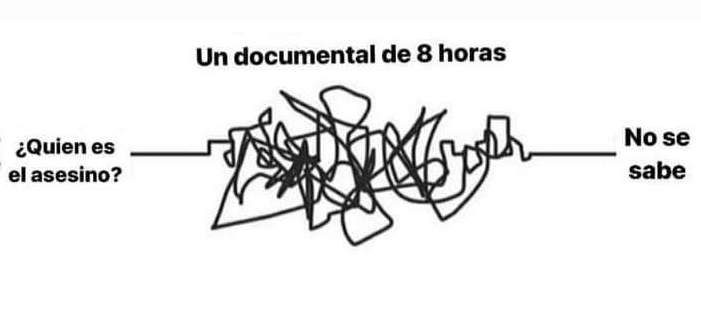
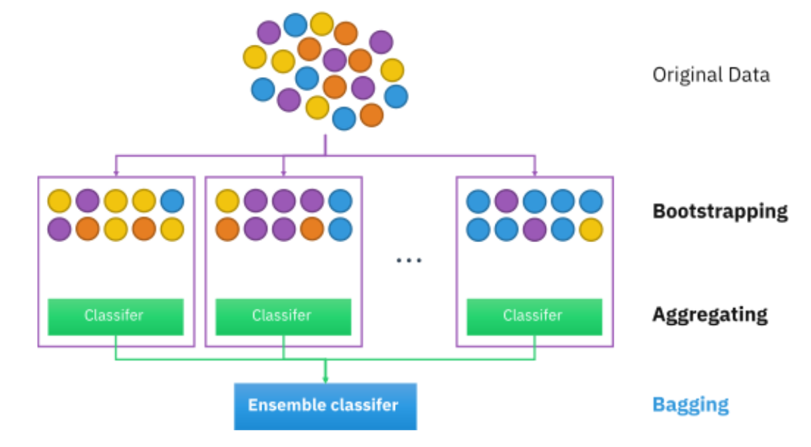
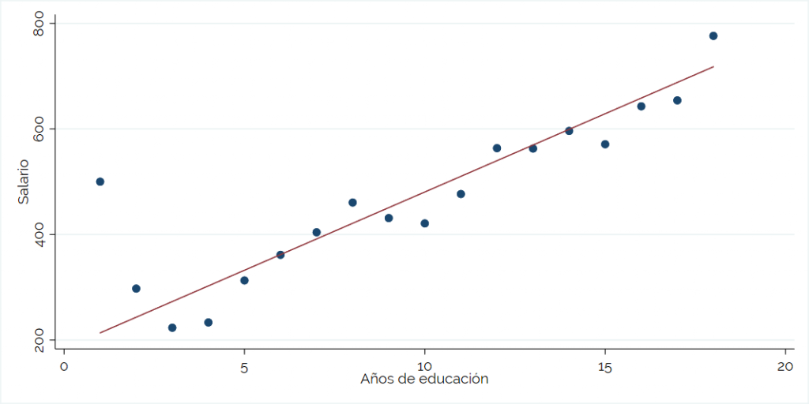
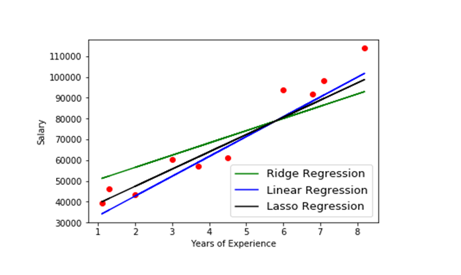
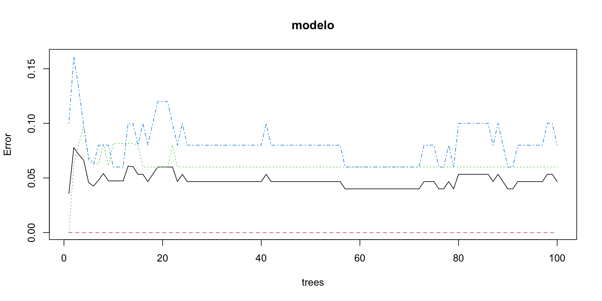
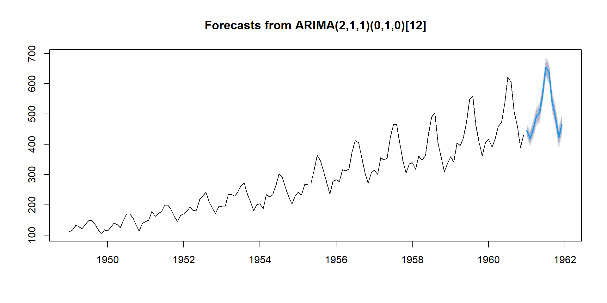

flowchart TD
A[Pregunta / hipótesis] -->|Conseguir Datos| B[Datos]
B --> C[Datos: Entrenamiento]
B --> F[Datos: Evaluación]
C --> D[Datos: Aprendizaje]
C -->|Conjunto de validación| E[Datos: Validación]
D -->|Pre procesamiento| G[Entrenamiento del modelo]
E -->|HiperParámetros| G
G -->|Métricas Entrenamiento| H[Entrenamiento Seleccionado]
H --> F
F -->|Métricas Testing| I[Modelo Final]
I -.-> |No satisfactorio| G
I -->|Cloud Services| J[Modelo en producción]
H -.->|Re-procesamiento| G
Que comience el periplo de la Modelización
1. Bases de modelización
1.1. Tener las cosas claras antes de empezar
- Tener clara la pregunta
- Tener una idea de la complejidad de la pregunta
- Tener más o menos claras las variables que interfieren en el proceso
- Tener claros las técnicas y el flujo de trabajo necesarios para responder
1.2. Bases de modelización
Machine learning: el sentimiento cuando te asomas por primera vez
1.3. Flujo completo de modelización
2. Validación cruzada
2.1. Concepto
- Objetivo: Evaluar la capacidad de generalización de un modelo a datos no vistos.
- Técnica: Dividir el conjunto de datos en subconjuntos para entrenamiento y validación.
Repites este proceso varias veces, dividiendo tus datos de diferentes maneras. Esto ayuda a asegurar que tu evaluación del modelo no dependa de una sola división de datos.
Leave-One-Out Cross-Validation (LOOCV)
- Descripción: Cada observación se usa como conjunto de validación una vez, y el resto como conjunto de entrenamiento.
- Ventajas:
- Utiliza al máximo los datos para el entrenamiento.
- Minimiza el sesgo de estimación.
- Desventajas:
- Extremadamente costosa computacionalmente.
- Alta variabilidad en las estimaciones. (necesario plotear la distribición)
Leave-One-Out Cross-Validation (LOOCV)

K-Fold Cross-Validation
- Descripción: Divide los datos en K particiones. Realiza K iteraciones, cada vez usando una partición diferente como conjunto de validación.
- Ventajas:
- Utiliza todos los datos para entrenamiento y validación.
- Proporciona una estimación robusta del rendimiento del modelo.
- Desventajas:
- Computacionalmente costosa si K es grande.
K-Fold Cross-Validation

Bootstrap
Descripción: Genera múltiples muestras aleatorias con reemplazo a partir del conjunto de datos original.
Ventajas:
- Proporciona una medida de la incertidumbre en la evaluación del modelo.
- Útil para construir intervalos de confianza alrededor de las métricas de evaluación.
Desventajas:
- No es una técnica de validación cruzada en sí misma, sino más bien una técnica de remuestreo que se usa en conjunto con otras técnicas de validación cruzada.
Bootstrap
Shuffle-Split (Monte Carlo)
Descripción: Se realizan múltiples divisiones aleatorias del conjunto de datos. En cada iteración, una fracción aleatoria de los datos se usa para entrenamiento y la fracción complementaria para validación.
Ventajas:
- Más flexibilidad en la proporción de entrenamiento/validación.
- Menor sesgo debido a la aleatorización repetida.
Desventajas:
- No garantiza que todas las observaciones se utilicen en las validaciones.
Advertencias sobre Validación Cruzada 1
1. La elección del número de divisiones no debe ser aleatoria
- Elegir un número adecuado de divisiones para evitar sesgos en la evaluación del modelo.
- Por ejemplo, en la validación cruzada de K-fold, es común utilizar valores típicos como 5 o 10 para K. Sin embargo, la elección de K debe considerar el tamaño del conjunto de datos y el equilibrio entre la varianza y el sesgo.
Advertencias sobre Validación Cruzada 2
2. Siempre estratifica en problemas de clasificación
- Estratificar asegura una distribución equitativa de las clases en cada división.
- En problemas de clasificación, es esencial estratificar las divisiones para garantizar que todas las clases estén representadas en cada conjunto de entrenamiento y prueba. Esto ayuda a evitar sesgos y garantiza una evaluación más precisa del rendimiento del modelo.
Advertencias sobre Validación Cruzada 3
3. Elección de validación cruzada adecuada para un problema de regresión
- Aunque la validación cruzada de K-fold es comúnmente utilizada en problemas de regresión, también es importante considerar otras técnicas, como la validación cruzada estratificada, especialmente cuando hay una distribución desigual de los datos o se necesita una evaluación más precisa del rendimiento del modelo.
Advertencias sobre Validación Cruzada 4
4. Nunca Sobremuestrear antes de la validación cruzada.
- La sobremuestreo antes de la validación cruzada puede llevar a una evaluación sesgada del modelo.
- Conlleva al sobreajuste con los datos de entrenamiento, lo que resulta en una estimación errónea del rendimiento del modelo. Es importante realizar la sobremuestreo dentro de cadapartición de la validación cruzada para evitar este sesgo.
Advertencias sobre Validación Cruzada 5
5. Fuga de conocimientos
- Evitar la fuga de conocimientos al preprocesar los datos antes de la validación cruzada.
- Es fundamental preprocesar los datos antes de la validación cruzada para evitar la fuga de conocimientos. Esto incluye la estandarización de características, la imputación de valores perdidos y cualquier otra transformación de datos que se realice en función de la información del conjunto de datos completo y no solo del conjunto de entrenamiento.
Advertencias sobre Validación Cruzada 6
6. No hagas Validación cruzada aleatorizadas para datos de series temporales.
- La validación cruzada aleatorizada puede introducir sesgos en la evaluación del modelo con datos de series temporales.
- En lugar de utilizar validación cruzada aleatorizada, es preferible utilizar técnicas específicas para datos de series temporales, como la validación cruzada basada en el tiempo o la validación cruzada de bloques, que preservan la estructura temporal de los datos.
Advertencias sobre Validación Cruzada 7
7. Cuidado con la semilla a la hora de partir los datos.
- La semilla utilizada para partir los datos puede afectar significativamente los resultados de la validación cruzada.
- La elección de la semilla puede influir en cómo se dividen los datos en conjuntos de entrenamiento y prueba, lo que a su vez puede afectar la evaluación del rendimiento del modelo. Es importante ser consistente con la semilla utilizada para garantizar la reproducibilidad de los resultados.
3. Pre-procesamiento
Fases
La fase más artesanal dentro del machine learning. Ayuda a preparar los datos para ser usados con mayor eficiencia, mejorando la calidad del aprendizaje.
- Limpieza de datos (Data Cleaning)
- Transformación de datos (Data Transformation)
- Codificación de datos categóricos (Categorical Data Encoding)
- Reducción de dimensionalidad (Dimensionality Reduction)
- Selección de características (Feature Selection)
- Creación de características (Feature Engineering)
- Muestreo equilibrador (Sampling)
Limpieza de datos (Data Cleaning)
- Descarte de variables: Descartar variables con alta presencia de valores nulos o de variables altísimamente correlacionadas.
- Tratamiento de valores nulos: Técnica de Imputación o “relleno de valores faltantes”; se puede usar métodos como imputar por algún estadístico resumen, como la media, o utilizando métodos más sofisticados como la imputación por algoritmos predictores
- Eliminación de duplicados: Remover filas duplicadas para evitar sesgos en el modelo.
- Corrección de errores tipográficos: Identificación y corrección de errores tipográficos o inconsistencias en los datos.
Limpieza de datos (Data Cleaning) (Imputación)
- Missing Completely at Random (MCAR): Los datos se consideran MCAR cuando la probabilidad de que un dato esté perdido es completamente independiente de cualquier variable.
- (ej: datos perdidos por errores técnicos)
- Missing at Random (MAR): Los datos se consideran MAR cuando la probabilidad de que un dato esté perdido depende de otras variables observadas en el dataset, pero no del valor de la variable en sí misma que falta. Los datos faltantes pueden ser predichos por otras variables observadas.
- (ej: las personas con educación más baja son menos propensas a declarar su ingreso))
- Missing Not at Random (MNAR): Los datos se consideran MNAR cuando la probabilidad de que un dato esté perdido depende del valor de la variable que falta. Aquí, los datos faltantes no son aleatorios y están relacionados con las propias observaciones faltantes.
- (ej: las personas con niveles más altos de depresión pueden ser menos propensas a responder preguntas sobre su estado mental)
En la práctica se asume que \(CAR = MCAR\)
Transformación de datos (Data Transformation)
Normalización: Escalado de características a un rango específico (por ejemplo, entre 0 y 1). Comúnmente utilizada para algoritmos como redes neuronales.
Estandarización: Escalado de características para que tengan media 0 y desviación estándar 1. Usada frecuentemente en algoritmos como SVM y regresión logística.
Transformaciones logarítmicas o de Box-Cox: Aplicación de funciones matemáticas para transformar datos sesgados a una distribución más normal.
Transformación de datos: logaritmos
Al usar la escala logarítmica, los coeficientes de un modelo de regresión se interpretan en términos de cambios porcentuales. El modelo se vuelve interpretable desde el punto de vista relativo y no absoluto. Esto es vital para tratar temas como el salario donde los incremnetos relativos son mucho más válidos que los absolutos.
- No es lo mismo incremenetar el salario 100€ a alguien que cobra 1.000€ al mes que a alguien con 10.000€ al mes.
Transformación de datos: logaritmos (ejemplo)
Asumamos 2 modelos:
\[ Salario=2000+500(AñosExperiencia) + 1000(AñosEducación) \]
\[ log(Salario)=2.5+0.04(AñosExperiencia)+0.08(AñosEducación) \] Son el mismo modelo, la única diferencia es la escala de la variable respuesta salario
Transformación de datos: logaritmos (ejemplo
\[ Salario=2000+500(AñosExperiencia) + 1000(AñosEducación) \] Los coeficientes indicarían incrementos absolutos en el salario:
- Coeficiente de Años de Experiencia \(\beta_{AñosExperiencia} = 500\): Cada año de experiencia aumentaría el salario en 500.
- Coeficiente de Años de Educación \(\beta_{AñosEducación} = 1000\): Cada año de experiencia aumentaría el salario en 1000.
Transformación de datos: logaritmos (ejemplo
\[ log(Salario)=2.5+0.04(AñosExperiencia)+0.08(AñosEducación) \]
Coeficiente de Años de Experiencia
- Coeficiente de Años de Experiencia \(\beta_{AñosExperiencia} = 0.04\):
- Cada año adicional de experiencia, el logaritmo del salario aumenta en 0.04 unidades.
- En términos porcentuales, esto se interpreta \((e^{0.04}−1)×100 ≈ (1.0408−1)×100=0.0408×100 = 4.08\%\)
- Coeficiente de Años de Educación \(\beta_{AñosEducación} = 1000\): Cada año de experiencia aumentaría el salario en 1000.
- Cada año adicional de Educacion, el logaritmo del salario aumenta en 0.08 unidades.
- En términos porcentuales, esto se interpreta \((e^{0.08}−1)×100 ≈ (1.0408−1)×100=0.083×100 = 8.3\%\)
Codificación de datos categóricos (Categorical Data Encoding):
- Dummy Encoding: Transformación de variables categóricas en variables binarias, dejando una categoría implícita en la referencia.
- One-Hot Encoding: Transformación de variables categóricas en variables binarias, sin categoría de referencia.

- Label Encoding: Asignación de un número entero único a cada categoría.
- Target Encoding: Sustitución de categorías por la un estadístico del target, como al media o los cuartiles.
Selección de características (Feature Selection):
- Métodos de filtro: Selección de características basadas en estadísticas univariadas (por ejemplo, chi-cuadrado, ANOVA).
- Métodos de envoltura (Wrapper): Selección de características usando algoritmos de búsqueda (por ejemplo, secuencial hacia adelante o hacia atrás).
- Métodos basados en importancia de modelos: Uso de algoritmos de aprendizaje (como árboles de decisión) para evaluar la importancia de cada característica.
Reducción de dimensionalidad (Dimensionality Reduction):
Principal Component Analysis (PCA): Reducción del número de variables manteniendo la mayor cantidad de variabilidad posible.
Linear Discriminant Analysis (LDA): Similar al PCA pero también considera la clase del target, útil en problemas de clasificación.
Creación de características (Feature Engineering):
- Combinación de características: Creación de nuevas características a partir de las existentes (por ejemplo, suma, producto).
- Extracción de características temporales: Creación de nuevas características basadas en datos de series temporales, como día de la semana, mes, etc.
- Transformaciones polinómicas: Generación de nuevas características combinando las existentes de manera no lineal.
Muestreo (Sampling):
Objetivo: balancear el dataset.
- Submuestreo (Undersampling): Reducción de la cantidad de muestras en la clase mayoritaria
- Sobremuestreo (Oversampling): Incremento de la cantidad de muestras en la clase minoritaria, utilizando técnicas como SMOTE (Synthetic Minority Over-sampling Technique).
4. Tipos de modelos
Tipos de modelos
- Respecto a la utilidad:
- Explicativo
- Predictivo
- Respecto a la escalabilidad:
- Exploratorios
- En producción
- Respecto la necesidad:
- Supervisado
- No supervisado
- Por refuerzo
Respecto a la utilidad
| Modelos explicativos | Modelos predictivos | |
|---|---|---|
| Relación x e y | Causalidad | Asociación |
| Protagonista | Teoria | Datos |
| Visión | Retrospectiva | Futura |
| Varianza | Minimizar sesgo | Maximizar predicción |
Respecto a la utilidad
| Modelos explicativos | Modelos predictivos | |
|---|---|---|
| Objetivos | Establecer relaciones causales | Predecir diagnósticos actuales o resultados futuros |
| Precaución | Las posibilidades de hallazgos (Error tipo I) | No ajuste: falta de generalizabilidad a nuevas poblaciones |
| Variables candidatas | Un conjunto limitado de factores de riesgo y factores de confusión | Muchos predictores potenciales; algunos pueden no tener relación causal con el resultado. |
| Selección de variables | Basada en hipótesis; No debe utilizar procedimientos de selección automatizados. | Exploratorio; Puede utilizar procedimientos de selección automatizados, siempre con la correspondiente validación. |
| Formas de ver el rendimiento | Tamaño de los coeficientes y nivel de significación de las variables | Discriminación (análisis ROC); calibración (Hosmer-Lemeshow); de ajuste (R2, AIC); reclasificación (índice de reclasificación neta); |
| Validación | Se necesitan nuevos estudios para confirmar las relaciones causales individuales | Validación interna; muestreo dividido; validación cruzada; bootstrap; validación externa. |
Respecto a la utilidad
Los investigadores con objetivos explicativos se desvían.
Intentan optimizar métricas del modelo; \(R^2\),curvas ROC …, y descuidan cuestiones como la confusión.
Los investigadores con objetivos predictivos se desvían.
preocupándose por los coeficientes \(\beta\) y valores p, y omiten omiten pasos críticos como la calibración o la validación.
Respecto a la utilidad
Respecto a la utilidad
Respecto a la escalabilidad:
Modelos Exploratorios: fases neofita. Utilizados a por el equipo de investigación. No tienen alcance, ni necesidad de mantenimiento o depuración.
Modelo en producción: han sido aprobados y se requiere de que sean de uso abierto para su uso. require de poner el modelo en la nube y que otreos usuarios los utilicen.
Respecto la necesidad:
- Aprendizaje supervisado
- Aprendizaje no supervisado
- Aprendizaje por refuerzo
4. Aprendizaje supervisado
Aprendizaje supervisado
“El aprendizaje supervisado es la tarea de crear una función que assigna una entrada a una salida basándose en pares de entrada-salida de ejemplo.”
Kevin P. Murphy, Machine Learning: A Probabilistic Perspective
Aprendizaje supervisado
Relativamente, el tipo de modelo más fiable y conocido
Requiere de completa supervisión humana
Los datos pueden contener error humano, ergo los algoritmos aprendan incorrectamente
Tipos de modelos:
- clasificación: Variables factor.
- regresion: Variables numericas.
Aprendizaje supervisado

“Los privilegiados son analizados por personas, las masas por máquinas.”
Cathy O’Neil
Aprendizaje supervisado
- Educación: Despido de profesores en Washington DC y Chicago por dar demasiado peso en la fórmula las bajas calificaciones de los alumnos.
- Justicia: Janet Collins y su esposo Malcolm a la cárcel por una probabilidad de 1 entre 12 millones.
- Política: microtargeting político en redes para dirigir campañas.
- Economía: sesgos en el crédito y trabajo de tipo espiral retroalimentativa.
Aprendizaje supervisado
- Regresión
- Árboles de decisión
- Naïve Bayes
- Técnicas de Supervivencia
- Support Vector Machines (SVM)
- SARIMA models
- Redes neuronales
Regresión
Definición: Modelos que predicen una variable numérica continua.
Forma básica (lineal):
\(Y = \beta_0 + \beta X +\epsilon\)
- Forma completa:
\(Y = f\left( \beta_0 + \beta X + \lambda \left( \frac{1 - \alpha}{2}\sum_{j=1}^{p}\beta_{j}^{2} + \alpha \sum_{j=1}^{p}|\beta_{j}| \right) + \epsilon \right)\)
Regresión
- Segun la funcion de enlace:
- Regresión lineal.
- Regresión múltiple.
- Regresión polinómica.
- Según la restricción:
- Regresión Lasso (elimina coeficientes)
- Regresión Ridge (elimina colinealidad)
- Regresión elastic net (ambos mundos, pero un poco más malos que su versión sola)
- Según el diseño experimental:
- Efectos fijos
- Efectos aleatorios
- Efectos mixtos
Regresión: según la funcion de enlace

Regresión: según la restriccion
Regresión
Call:
lm(formula = mpg ~ wt + hp, data = mtcars)
Residuals:
Min 1Q Median 3Q Max
-3.941 -1.600 -0.182 1.050 5.854
Coefficients:
Estimate Std. Error t value Pr(>|t|)
(Intercept) 37.22727 1.59879 23.285 < 2e-16 ***
wt -3.87783 0.63273 -6.129 1.12e-06 ***
hp -0.03177 0.00903 -3.519 0.00145 **
---
Signif. codes: 0 '***' 0.001 '**' 0.01 '*' 0.05 '.' 0.1 ' ' 1
Residual standard error: 2.593 on 29 degrees of freedom
Multiple R-squared: 0.8268, Adjusted R-squared: 0.8148
F-statistic: 69.21 on 2 and 29 DF, p-value: 9.109e-12
Regresión
Contras y Advertencias:
- Sensibilidad a valores atípicos.
- Multicolinealidad entre variables independientes.
- Suposiciones estrictas deben ser verificadas.
- Puede no capturar relaciones no lineales, incluso las simples.
Árboles de decisión
Definición: Modelos que segmentan los datos en ramas según condiciones.
Características:
- Interpretabilidad fácil.
- No necesita suposiciones sobre la distribución de datos.
- Tipos:
- Clasificación
- regresión (CART).
Árboles de decisión
Conceptos Clave:
- Nodo raíz,
- nodos internos
- hojas.
Criterios de partición:
- Gini,
- entropía,
- varianza.
Árboles de decisión

Árboles de decisión

Árboles de decisión
Contras y Advertencias:
- Tendencia a sobreajuste (overfitting). Sobre en algoritmos de árbol más complejos
- Muy sensibles a pequeñas variaciones en los datos. (difíciles de tener en producción bien depurados)
- Pueden generar árboles muy complejos si no se poda correctamente.
Random Forest
Definición: Conjunto de árboles de decisión que mejora la precisión y robustez.
Características: - Utiliza el bagging (bootstrap aggregating). - Promedia los resultados de múltiples árboles. - Reduce la varianza del árbol de decisión y mejora la generalización.
Random Forest
MeanDecreaseGini
Sepal.Length 10.162955
Sepal.Width 2.896324
Petal.Length 42.239383
Petal.Width 44.044671
Random Forest
Contras y Advertencias: - Requiere bastantes más recursos computacionales que un solo árbol. - Interpretación más compleja debido al conjunto de modelos. - No es ideal para datasets con un número muy alto de características debido al riesgo de sobreajuste.
Naïve Bayes
Definición: Clasificador basado en la probabilidad Bayesiana.
Características: - Supone independencia entre predictores. - Muy eficiente en términos de tiempo. - Funciona bien con datos pequeños y ruidosos.
Naïve Bayes

Naïve Bayes
predicciones setosa versicolor virginica
setosa 50 0 0
versicolor 0 47 3
virginica 0 3 47Naïve Bayes
Contras y Advertencias:
- La suposición de independencia rara vez se cumple en la práctica.
- Suele ser superado por modelos más complejos.
- No maneja bien características continuas, requiere de discretización sin discretización.
Técnicas de Supervivencia
Definición: Modelos que analizan el tiempo hasta que ocurre un evento.
Conceptos Clave: - Función de supervivencia: Probabilidad de que el evento no ocurra hasta cierto tiempo. - Función de riesgo: Tasa instantánea de ocurrencia del evento en el tiempo t.
Modelos Comunes: - Kaplan-Meier: Estimación no paramétrica de la función de supervivencia. - Modelo de Cox: Análisis de riesgos proporcionales para estudiar el efecto de variables explicativas. - Modelos de Vida Acelerada: Analiza el tiempo hasta el evento con supuestos diferentes a los riesgos proporcionales.
Técnicas de Supervivencia / Kaplan_Meyer
Técnicas de Supervivencia / Kaplan_Meyer
Contras y Advertencias:
- No ajusta para variables explicativas múltiples.
- Asume que censura es independiente del riesgo de evento.
- No permite modelar efectos de covariables en la supervivencia.
Técnicas de Supervivencia / Cox
Call:
coxph(formula = Surv(time, status) ~ age + sex + ph.ecog, data = lung)
n= 227, number of events= 164
(1 observation deleted due to missingness)
coef exp(coef) se(coef) z Pr(>|z|)
age 0.011067 1.011128 0.009267 1.194 0.232416
sex -0.552612 0.575445 0.167739 -3.294 0.000986 ***
ph.ecog 0.463728 1.589991 0.113577 4.083 4.45e-05 ***
---
Signif. codes: 0 '***' 0.001 '**' 0.01 '*' 0.05 '.' 0.1 ' ' 1
exp(coef) exp(-coef) lower .95 upper .95
age 1.0111 0.9890 0.9929 1.0297
sex 0.5754 1.7378 0.4142 0.7994
ph.ecog 1.5900 0.6289 1.2727 1.9864
Concordance= 0.637 (se = 0.025 )
Likelihood ratio test= 30.5 on 3 df, p=1e-06
Wald test = 29.93 on 3 df, p=1e-06
Score (logrank) test = 30.5 on 3 df, p=1e-06Técnicas de Supervivencia / Cox
Contras y Advertencias: - Supone riesgos proporcionales, lo cual puede no ser realista. - Requiere suficiente tamaño muestral para estimaciones confiables. - Interpretación de coeficientes requiere cuidado, especialmente con interacciones y variables categóricas.
Técnicas de Supervivencia / AFT
Definición: Modelos que asumen que el efecto de las covariables acelera o desacelera el tiempo hasta el evento.
Características: - No supone riesgos proporcionales. - Modela directamente el tiempo hasta el evento. - Puede utilizar diversas distribuciones (Weibull, log-normal, log-logistic).
Técnicas de Supervivencia / AFT
Técnicas de Supervivencia / AFT
Call:
survreg(formula = Surv(time, status) ~ age + sex + ph.ecog, data = lung,
dist = "weibull")
Value Std. Error z p
(Intercept) 6.27344 0.45358 13.83 < 2e-16
age -0.00748 0.00676 -1.11 0.2690
sex 0.40109 0.12373 3.24 0.0012
ph.ecog -0.33964 0.08348 -4.07 4.7e-05
Log(scale) -0.31319 0.06135 -5.11 3.3e-07
Scale= 0.731
Weibull distribution
Loglik(model)= -1132.4 Loglik(intercept only)= -1147.4
Chisq= 29.98 on 3 degrees of freedom, p= 1.4e-06
Number of Newton-Raphson Iterations: 5
n=227 (1 observation deleted due to missingness) [1] 324.3117 476.3705 521.0788 368.2594 505.7282 324.3117 360.6869 352.6880
[9] 379.4373 254.4865 368.2594 360.6869 506.5628 368.2594 341.7342 334.1557
[17] 250.7100 394.5380 368.2594 341.7342 820.0127 388.0428 513.3461 462.3370
[25] 499.0456 505.7282 169.4115 379.4373 230.9190 502.7902 232.6517 280.4593
[33] 382.9153 254.4865 377.2329 246.9896 514.1933 230.9190 521.9387 334.1557
[41] 347.4543 760.9483 382.9153 339.1891 339.7489 455.4761 352.1070 455.4761
[49] 579.5235 491.6399 494.5128 476.3705 513.3461 362.7946 498.2234 727.5719
[57] 262.2110 545.8820 521.9387 342.2982 393.8880 326.7452 518.0515 336.6630
[65] 241.5121 363.3933 733.0312 476.3705 341.7342 494.5128 588.2530 230.9190
[73] 418.1625 566.6716 495.3289 807.8440 554.1047 432.2548 458.8938 509.5229
[81] 373.8066 411.9571 606.1084 405.8438 331.6670 529.8008 501.9618 606.1084
[89] 234.3974 494.5128 334.1557 344.2984 549.9780 706.1382 234.3974 336.6630
[97] 331.6670 349.4846 700.8792 766.6580 502.7902 371.0226 352.1070 258.3199
[105] 344.2984 562.4513 341.7342 373.8066 342.2982 472.8227 405.8438 310.0869
[113] 675.1659 562.4513 227.4923 278.3705 241.5121 245.1501 310.0869 452.0839
[121] 382.9153 502.7902 234.3974 469.3013 344.2984 388.0428 349.4846 337.2186
[129] 826.1656 541.8165 379.4373 557.3426 558.2624 479.9449 344.8666 545.8820
[137] 264.1785 376.6114 521.0788 347.4543 324.3117 227.4923 518.0515 368.2594
[145] 566.6716 465.8062 376.6114 429.0355 760.9483 334.1557 505.7282 744.0730
[153] 566.6716 266.1607 239.7135 506.5628 252.5912 352.1070 554.1047 744.0730
[161] 606.1084 239.7135 352.1070 349.4846 772.4106 537.7812 561.5246 357.4108
[169] 487.1744 357.4108 766.6580 371.0226 857.6297 379.4373 541.8165 264.1785
[177] 558.2624 566.6716 680.2319 505.7282 591.6905 722.1532 518.0515 807.8440
[185] 844.9028 350.0614 513.3461 349.4846 532.8967 329.1969 272.1972 388.0428
[193] 349.4846 331.6670 469.3013 525.8550 349.4846 801.8275 360.0926 521.9387
[201] 326.7452 738.5314 813.9056 738.5314 252.5912 784.0456 412.6370 336.6630
[209] 541.8165 755.2811 341.7342 336.6630 371.6349 346.8818 346.8818 619.8548
[217] 227.4923 355.3344 772.4106 341.7342 495.3289 319.4990 317.1196 591.6905
[225] 342.2982 344.2984 545.8820Técnicas de Supervivencia / AFT
Support Vector Machines
Definición: Modelos que encuentran un hiperplano óptimo para la clasificación.
Características: - Eficaz en espacios de alta dimensión. - Utiliza un subconjunto de puntos de entrenamiento (vectores de soporte). - Tipos de kernel: + lineal + polinomial + radial.
Support Vector Machines
Support Vector Machines
predicciones setosa versicolor virginica
setosa 50 0 0
versicolor 0 46 1
virginica 0 4 49Support Vector Machines
Contras y Advertencias:
- Muy sensible a su parametrización.
- Suele requerir de mucho tiempo de entrenamiento con grandes datasets.
- La interpretabildiad del modelo no es muy intuitiva cuando hay más de 2 casos.
SARIMA
Definición: Modelos de series temporales que combinan autorregresión y media móvil.
Características:
- Captura estacionalidad y tendencias en los datos.
- Basado en diferencias para hacer la serie estacionaria.
- Parámetros: p, d, q (ARIMA); P, D, Q, s (SARIMA).
SARIMA
SARIMA
SARIMA
Contras y Advertencias:
- Requiere series temporales estacionarias.
- La selección de parámetros puede ser compleja.
- Sensible a datos faltantes o anomalías.
Redes neuronales
Definición: Modelos inspirados en la estructura del cerebro humano para el aprendizaje. Características: - Capacidad de aprender relaciones no lineales complejas. - Compuesto de capas (entrada, ocultas, salida). - Utiliza Algoritmo de retropropagación para el aprendizaje.
Redes neuronales
Redes neuronales
Redes neuronales
Contras y Advertencias:
- Requiere gran cantidad de datos para buen rendimiento.
- el tiempo de entrenamiento puede ser largo.
- El más complicado de interpretar y explicar resultados.
Riesgo de sobreajuste sin regularización adecuada.
5. Aprendizaje no supervisado
Caracteristicas principales
Analiza y agrupa conjuntos de datos sin etiquetar.
Se basan en distancias. (Euclídeas o mahalanobis)
Solución ideal para el análisis de datos exploratorios.
Computacionalmente duros
La interpretación puede ser un infierno
Agrupación en clústeres
- La agrupación en clústeres de k-medias
- Agrupación en clústeres jerárquica (HCA)
- Agrupación en clústeres probabilística (GMM)
Aprendizaje no supervisado: Reglas de asociación
Identifican la probabilidad de consumir un producto dado el consumo de otro producto
Aprendizaje no supervisado: Reducción de dimensionalidad
- Análisis de componentes principales (PCA)
Este método utiliza una transformación lineal para crear una nueva representación de datos
- Descomposición en valores singulares
factoriza una matriz, A, en tres matrices de rango inferior.
Aprendizaje no supervisado, caso Target
- Fundada en 1962
- Es la sexta empresa de venta al por menor más grande de Estados Unidos.
- 351.000 empleados
Aprendizaje no supervisado, caso Target

Aprendizaje no supervisado, caso Target

Aprendizaje no supervisado, caso Target
| ClienteID | VitaminasPrenatales | LocionSinFragancia | JabonSinFragancia | Calcio | Panales | Toallitas |
|---|---|---|---|---|---|---|
| 1 | 1 | 1 | 0 | 0 | 0 | 0 |
| 2 | 0 | 0 | 1 | 1 | 0 | 0 |
| 3 | 0 | 0 | 0 | 0 | 1 | 1 |
| 4 | 0 | 0 | 0 | 0 | 0 | 0 |
| 5 | 1 | 1 | 1 | 1 | 0 | 0 |
| 6 | 0 | 0 | 0 | 1 | 1 | 0 |
Aprendizaje no supervisado, caso Target
# Aplicar K-means
set.seed(123) # Para reproducibilidad
kmeans_result <- stats::kmeans(Target_ejemplo[,-1], centers = 3)
# Añadir los resultados del cluster al dataframe
Target_ejemplo <- Target_ejemplo %>%
mutate(Cluster = as_factor(kmeans_result$cluster) ) %>%
select(ClienteID, Cluster, everything())Aprendizaje no supervisado, caso Target
| ClienteID | Cluster | VitaminasPrenatales | LocionSinFragancia | JabonSinFragancia | Calcio | Panales | Toallitas |
|---|---|---|---|---|---|---|---|
| 1 | 3 | 1 | 1 | 0 | 0 | 0 | 0 |
| 2 | 2 | 0 | 0 | 1 | 1 | 0 | 0 |
| 3 | 1 | 0 | 0 | 0 | 0 | 1 | 1 |
| 4 | 1 | 0 | 0 | 0 | 0 | 0 | 0 |
| 5 | 3 | 1 | 1 | 1 | 1 | 0 | 0 |
| 6 | 2 | 0 | 0 | 0 | 1 | 1 | 0 |
Aprendizaje no supervisado, caso Target
6. Aprendizaje por refuerzo
Funcion
Entrena al software para que tome decisiones a fin de lograr los mejores resultados.
Ensayo y error (Supervisado y no supervisado al mismo tiempo)
Aprendizaje por refuerzo
Sobresale en entornos complejos
Optimiza de acuerdo con objetivos a largo plazo
Requiere menos interacción humana
Aprendizaje por refuerzo (Mario)
Aprendizaje por refuerzo (Mario)
Aprendizaje por refuerzo (Pokemon)
Aprendizaje por refuerzo (Pokemon)
Aprendizaje por refuerzo (Pokemon)
Aprendizaje por refuerzo (Casos famosos)
AlphaGo y AlphaZero: Desarrollados por DeepMind, estos sistemas lograron hitos significativos en juegos complejos como el Go, el ajedrez y el shogi.
- AlphaGo derrotó al campeón mundial de Go, Lee Sedol, en 2016
- AlphaZero superó a los mejores programas de ajedrez y shogi tras solo unas pocas horas de autoentrenamiento, aprendiendo desde cero sin datos previos.
Aprendizaje por refuerzo (Casos famosos)
StarCraft II: AlphaStar, también de DeepMind, logró un desempeño notable en StarCraft II, otro juego de estrategia en tiempo real muy complejo.
En 2019, AlphaStar compitió y venció a jugadores profesionales, demostrando habilidades avanzadas de planificación, microgestión y toma de decisiones y sin superar el número de comandos por minuto que un jugador profesional promedio hacía.
7 Métricas
7.1 Métricas para modelos de regresión
Toda métrica de evaluación para un modelo de machine learning supervisado se basa en el siguiente concepto:
\[ e_{i} = original_{i} - prediccion_{i} \] \[ e_{i} = y_{i} - \hat{y_{i}} \]
\[ e_{i} = f(y_{i} - \hat{y_{i}}) \]
Métricas: MAE
El Error Absoluto Medio (MAE por sus siglas en inglés Mean Absolute Error)
Medida de la magnitud promedio de los errores en un conjunto de predicciones, sin considerar su dirección. \[ MAE = \frac{1}{n} \sum_{i=1}^{n} |y_i - \hat{y}_i| \] Donde:
- n es el número de observaciones.
- yi es el valor observado.
- *_{i}* es el valor predicho por el modelo.
Métricas: MAE
Métrica que evalua el rendimiento del modelo en términos de la magnitud del error. Basada en la diferencia absoluta promedio.
Fácil de interpretar ya que se encuentra en la misma escala que los datos originales.
- No penaliza en exceso los valores atípicos (outliers) o errores extremos.
No considera la dirección de los errores.
Trata todos los errores por igual, independientemente de si son positivos o negativos.
Métricas: MAE
- Un MAE de 0 indica que el modelo predice exactamente los valores reales.
- \(MAE > 0\) indica que el modelo tiene un mayor error promedio.
- No penaliza ni discrimina entre errores grande o pequeños, es un promedio directo.
Métricas: MAPE
El Error Absoluto Medio Porcentual (MAPE por sus siglas en inglés Mean Absolute Percentage Error).
Medida de la magnitud promedio de los errores en un conjunto de predicciones, expresada como un porcentaje. \[ MAPE = \frac{100}{n} \sum_{i=1}^{n} \left| \frac{y_i - \hat{y}_i}{y_i} \right| \] Donde:
- n es el número de observaciones.
- yi es el valor observado.
- *(_i)* es el valor predicho por el modelo.
Métricas: MAPE
Métrica que evalúa el rendimiento del modelo en términos de la magnitud del error relativo. Basada en la diferencia porcentual promedio absoluta.
Expresa el error como un porcentaje, lo cual facilita la interpretación y comparación entre diferentes modelos y escalas.
- Puede ser muy grande o indefinida si los valores observados son cercanos a cero.
No considera la dirección de los errores.
Trata todos los errores por igual, independientemente de si son positivos o negativos.
Métricas: MAPE
- Un MAPE de 0% indica que el modelo predice exactamente los valores reales.
- MAPE > 0% indica que el modelo tiene un mayor error porcentual promedio.
- Es útil para comparar la precisión de modelos en diferentes escalas y unidades, pero puede ser problemático con valores observados cercanos a cero.
Métricas: MSE
El Error Cuadrático Medio (MSE por sus siglas en inglés Mean Squared Error).
Medida de la magnitud promedio de los errores en un conjunto de predicciones, considerando la dirección y penalizando los errores grandes más que los pequeños. \[ MSE = \frac{1}{n} \sum_{i=1}^{n} (y_i - \hat{y}_i)^2 \] Donde:
- n es el número de observaciones.
- yi es el valor observado.
- *(_i)* es el valor predicho por el modelo.
Métricas: MSE
Métrica que evalúa el rendimiento del modelo en términos de la magnitud del error. Basada en la diferencia cuadrática promedio.
- Penaliza los errores grandes más que los pequeños debido a la elevación al cuadrado de las diferencias.
Se utiliza principalmente en análisis teóricos y en optimización de modelos de alta complejidad.
- las unidades del error son al cuadrado, puede ser difícil de interpretar directamente en términos de la escala original de los datos.
Es sensible a los valores atípicos.
Unos pocos valores atípicos pueden incrementar significativamente el MSE.
Métricas: MSE
- Un MSE de 0 indica que el modelo predice exactamente los valores reales.
- MSE > 0 indica que el modelo tiene un mayor error promedio.
- Penaliza más los errores grandes que los pequeños. Útil en contextos donde los errores grandes son especialmente perjudiciales.
Métricas: RMSE
El Error Cuadrático Medio Raiz (RMSE por sus siglas en inglés Root Mean Squared Error).
Medida de la magnitud promedio de los errores en un conjunto de predicciones, considerando su dirección. \[ RMSE = \sqrt{\frac{1}{n} \sum_{i=1}^{n} (y_i - \hat{y}_i)^2} \] Donde:
- n es el número de observaciones.
- yi es el valor observado.
- *(_i)* es el valor predicho por el modelo.
Métricas: RMSE
Métrica que evalúa el rendimiento del modelo en términos de la magnitud del error. Basada en la diferencia cuadrática promedio.
Fácil de interpretar ya que se encuentra en la misma escala que los datos originales.
Penaliza altamente los valores atípicos (outliers) o errores extremos debido a la elevación al cuadrado de las diferencias y luego devolverlos a la escala original.
Es muy sensible a los valores atípicos.
Métricas: RMSE
- Un RMSE de 0 indica que el modelo predice exactamente los valores reales.
- RMSE > 0 indica que el modelo tiene un mayor error promedio.
- Penaliza los errores grandes más que los pequeños, por lo tanto, es útil en contextos donde los errores grandes son especialmente perjudiciales.
Métricas: \(R^2\)
El Coeficiente de Determinación \(R^2\).
Medida que indica la proporción de la variabilidad de la variable dependiente que es explicada por el modelo. \[ R^2 = 1 - \frac{\sum_{i=1}^{n} (y_i - \hat{y}_i)^2}{\sum_{i=1}^{n} (y_i - \bar{y})^2} \] Donde:
- n es el número de observaciones.
- yi es el valor observado.
- \(\hat{y}_{i}\) es el valor predicho por el modelo.
- \(\bar{y}\) es la media de los valores observados.
Métricas: \(R^2\)
Métrica que evalúa el rendimiento del modelo en términos de la proporción de variabilidad explicada. Basada en la relación entre la suma de los errores residuales y la suma total de los cuadrados.
Facilita la interpretación de la efectividad del modelo, ya que varía entre 0 y 1.
- Puede ser engañoso en modelos no lineales o con muchos parámetros(atención modelos predictivos)
No informa sobre el sesgo o la varianza del modelo.
Solo indica la proporción de la varianza explicada.
Métricas: \(R^2\)
- Un \(R^2\) de 1 indica que el modelo explica toda la variabilidad de los datos.
- \(R^2 = 0\) indica que el modelo no explica ninguna variabilidad de los datos.
- Valores negativos de \(R^2\) pueden ocurrir y indican que el modelo es peor que uno que simplemente predice la media de los datos.
Métricas: Huber Loss
también conocida como error cuadrático medio suavizado
Ccombina el MAE con MSE, siendo menos sensible a los valores atípicos que el MSE y más robusta que el MAE. \[ L_\delta(y, \hat{y}) = \begin{cases} \frac{1}{2}(y - \hat{y})^2 & \text{si } |y - \hat{y}| \le \delta \\ \delta \cdot (|y - \hat{y}| - \frac{1}{2}\delta) & \text{si } |y - \hat{y}| > \delta \end{cases} \] Donde:
- y es el valor observado.
- \(\hat{y}\) es el valor predicho por el modelo.
- \(\delta\) es un umbral positivo que determina la transición entre el MAE y el MSE.
Métricas: Huber Loss
Métrica que evalúa el rendimiento del modelo en términos de la magnitud del error, combinando propiedades del MAE y el MSE.
La elección de \(\delta\) es crucial y puede influir en la sensibilidad del modelo a los valores atípicos.
Muy utlizado en técnicas de optimización basadas en gradientes. (XGBoost)
Métricas: Huber Loss
- Un valor de Huber Loss cercano a 0 indica que el modelo predice con alta precisión.
- La Huber Loss se ajusta dependiendo de la elección de \(\delta\), lo que permite controlar el equilibrio entre penalización de errores grandes y pequeños.
- Resumen información del MAE i el MSE, de modo que vale la pena computar ambos para tener un contexto amplio de la situación.
Métricas: ICC
El Índice de Ideabilidad de Correlación (ICC por sus siglas en inglés Index of Ideality of Correlation).
Medida que evalúa la precisión predictiva de un modelo al comparar los valores predichos con los valores observados. \[ ICC = 1 - \frac{\sum_{i=1}^{n} (y_i - \hat{y}_i)^2}{\sum_{i=1}^{n} (y_i - \overline{y})^2 + \sum_{i=1}^{n} (\hat{y}_i - \overline{\hat{y}})^2} \] Donde:
- n es el número de observaciones.
- yi es el valor observado.
- *(_i)* es el valor predicho por el modelo.
- () es la media de los valores observados.
- () es la media de los valores predichos.
Métricas: ICC
Métrica que evalúa el rendimiento del modelo en términos de precisión predictiva. Basada en la relación entre la suma de los errores residuales y las sumas de las desviaciones totales y predichas.
Proporciona una medida comprensible de la precisión predictiva del modelo.
- Puede ser sensible a la distribución de los valores observados y predichos.
Puede ser influenciado por la escala de los datos.
Los resultados pueden variar dependiendo de la escala de los valores observados y predichos.
Métricas: ICC
- Un ICC de 1 indica que el modelo predice exactamente los valores reales.
- ICC cercano a 0 indica que el modelo no tiene una buena precisión predictiva.
- ICC puede ser negativo si el modelo tiene un rendimiento peor que el promedio.
Métricas: AIC
El Criterio de Información de Akaike (Akaike 1974), AIC por sus siglas en inglés Akaike Information Criterion.
\[ AIC = 2{k} - \ln(\mathcal{L}) \]
Donde:
- k es el numero de parametros
- \(\mathcal{L}\) es la verosimilitud del modelo.
Métricas: AIC
Métrica basada en teoría de información, la cual balancea los poderes explicativos y predictivos del modelo
Castiga el uso de muchas variables.
Un AIC por si solo no tiene ningún valor.
Se necesitan de otras métricas o compararse con el AIC de otro modelo2 para darle contexto.
Métricas: AIC

Casos de interpretación 1
- Supongamos que hemos construido un modelo de tipo regresión para
- Objetivo: redecir los ingresos anuales de individuos basándonos en su nivel educativo (en años de educación formal).
- Nuestro pre-estudio de la población sugiere que el promedio de ingresos está alrededor de 25.000€.
Se evalua el modelo con el conjunto de entrenamiento. Las métricas son las siguientes:
- MAE (Mean Absolute Error): 2000
- RMSE (Root Mean Squared Error): 2500
- \(R^2\) : 0.85.
Casos de interpretación 1
Evaluación del Rendimiento Global:
\(RMSE >\sim MAE\) los errores grandes no son significativamente predominantes. La pequeña diferencia entre RMSE y MAE sugiere que no hay muchos outliers importantes afectando el modelo. El modelo está capturando de manera robusta la relación principal sin verse afectado por valores extremos.
El 85% de la variabilidad en los ingresos puede ser explicada por el nivel educativo. \(R^2\)
Casos de interpretación 2
- Supongamos que hemos construido un modelo de tipo regresión para
- Objetivo: redecir los ingresos anuales de individuos basándonos en su nivel educativo (en años de educación formal).
- Nuestro pre-estudio de la población sugiere que el promedio de ingresos está alrededor de 25.000€.
Se evalua el modelo con el conjunto de entrenamiento. Las métricas son las siguientes:
- MAE (Mean Absolute Error): 20000
- RMSE (Root Mean Squared Error): 45000
Casos de interpretación 2
Evaluación del Rendimiento Global:
La escala de los errores de demasiado grande respecto al promedio poblacional. No son resultados admisibles.
\(RMSE >> MAE\) los errores grandes son significativamente predominantes. La gran diferencia entre RMSE y MAE sugiere que hay muchos outliers importantes afectando el modelo.
Es muy posible que haya outliers tan fuera de escala que hayan desasjustado el modelo.
7.2 Métricas para modelos clasifiación
Toda métrica de evaluación para un modelo de machine learning supervisado se basa en el siguiente concepto:
| Prediccion TRUE | Prediccion FALSE | |
|---|---|---|
| Dato original TRUE | TRUE Positivo (TP) | FALSE Positive (FP) |
| Dato original FALSE | Falso Negativo (FN) | True Negativo (TN) |
Métricas: Accuracy
La Precisión (Accuracy).
Medida que evalúa la proporción de predicciones correctas sobre el total de predicciones realizadas. \[ Accuracy = \frac{TP + TN}{TP + TN + FP + FN} \] Donde:
- TP es el número de verdaderos positivos.
- TN es el número de verdaderos negativos.
- FP es el número de falsos positivos.
- FN es el número de falsos negativos.
Métricas: Accuracy
Métrica que evalúa el rendimiento del modelo en términos de predicciones correctas.
Fácil de interpretar y calcular.
- Puede ser engañosa en conjuntos de datos desbalanceados.
No distingue entre tipos de errores.
Trata todos los errores por igual, independientemente de si son falsos positivos o falsos negativos.
Métricas: Accuracy
- Una Accuracy de 1 indica que el modelo predice todas las clases correctamente.
- Accuracy cercana a 0 indica un bajo rendimiento del modelo.
- En contextos con clases desbalanceadas, otras métricas suelen ser más informativas.
Métricas: Precision
La Precisión (Precision), también conocida como Valor Predictivo Positivo.
Medida que evalúa la proporción de verdaderos positivos sobre el total de predicciones positivas realizadas por el modelo. \[ Precision = \frac{TP}{TP + FP} \] Donde:
- TP es el número de verdaderos positivos.
- FP es el número de falsos positivos.
Métricas: Precision
Métrica que evalúa el rendimiento del modelo en términos de exactitud de las predicciones positivas.
Importante en contextos donde es crucial minimizar los falsos positivos.
- Puede ser alta a costa de reducir la sensibilidad.
No considera los falsos negativos.
Puede no ser suficiente por sí sola para evaluar el rendimiento global del modelo.
Métricas: Precision
- Una Precisión de 1 indica que todas las predicciones positivas del modelo son correctas.
- Precisión cercana a 0 indica un alto número de falsos positivos.
- Es útil en contextos donde los falsos positivos son más costosos que los falsos negativos.
Métricas: Sensibilidad
La Sensibilidad (también conocida como Recall o Tasa de Verdaderos Positivos).
Medida que evalúa la proporción de verdaderos positivos sobre el total de positivos. \[ Sensibilidad = \frac{TP}{TP + FN} \] Donde:
- TP es el número de verdaderos positivos.
- FN es el número de falsos negativos.
Métricas: Sensibilidad
Métrica que evalúa el rendimiento del modelo en términos de capacidad para identificar correctamente los positivos.
Importante en contextos donde es crucial identificar correctamente todos los casos positivos. (enfermedad)
- Puede ser alta a costa de aumentar los falsos positivos.
No considera la tasa de falsos positivos.
Puede no ser suficiente por sí sola para evaluar el rendimiento global del modelo.
Métricas: Sensibilidad
- Una Sensibilidad de 1 indica que el modelo identifica correctamente todos los positivos reales.
- Sensibilidad cercana a 0 indica que el modelo identifica incorrectamente la mayoría de los positivos reales.
- Es útil en contextos donde los falsos negativos son más costosos que los falsos positivos.
Métricas: Especificidad
La Especificidad (también conocida como Tasa de Verdaderos Negativos).
Medida que evalúa la proporción de verdaderos negativos sobre el total de negativos. \[ Especificidad = \frac{TN}{TN + FP} \] Donde:
- TN es el número de verdaderos negativos.
- FP es el número de falsos positivos.
Métricas: Especificidad
Métrica que evalúa el rendimiento del modelo en términos de capacidad para identificar correctamente los negativos.
Importante en contextos donde es crucial identificar correctamente todos los casos negativos. (Inclusión)
- Puede ser alta a costa de aumentar los falsos negativos.
No considera la tasa de falsos negativos.
Insuficiente por sí sola para evaluar el rendimiento global del modelo.
Métricas: Especificidad
- Una Especificidad de 1 indica que el modelo identifica correctamente todos los negativos reales.
- Especificidad cercana a 0 indica que el modelo identifica incorrectamente la mayoría de los negativos reales.
- Es útil en contextos donde los falsos positivos son más costosos que los falsos negativos.
Métricas: J-Index
El Índice de Youden (J-Index por sus siglas en inglés).
Medida que combina la sensibilidad y la especificidad para evaluar el rendimiento general del modelo. \[ J = Sensibilidad + Especificidad - 1 \] Donde:
- Sensibilidad es la tasa de verdaderos positivos.
- Especificidad es la tasa de verdaderos negativos.
Métricas: J-Index
Métrica que evalúa el rendimiento del modelo en términos de balance entre sensibilidad y especificidad.
Proporciona una medida equilibrada del rendimiento del modelo considerando tanto los verdaderos positivos como los verdaderos negativos.
- No pondera la importancia relativa de sensibilidad y especificidad, no distingue entre tipos de errores.
Puede no ser suficiente por sí solo.
Es útil en combinación con otras métricas para una evaluación más completa.
Métricas: J-Index
- Un J-Index de 1 indica que el modelo predice perfectamente tanto los positivos como los negativos reales.
- J-Index cercano a 0 indica un bajo rendimiento del modelo.
- Es útil para comparar modelos en términos de su capacidad global para diferenciar entre clases.
Métricas: F1 Score
El F1 Score.
Medida que combina la precisión y la sensibilidad en una única métrica armonizada. \[ F1\ Score = 2 \times \frac{Precision \times Sensibilidad}{Precision + Sensibilidad} \] Donde:
- Precision es la precisión.
- Sensibilidad es la sensibilidad (también conocida como recall).
Métricas: F1 Score
Métrica que evalúa el rendimiento del modelo en términos de balance entre precisión y sensibilidad.
Proporciona una medida equilibrada del rendimiento del modelo cuando hay una distribución desigual de clases.
- Puede no ser suficiente por sí sola en todos los contextos.
Puede ser influenciada por clases desbalanceadas.
Es útil en combinación con otras métricas para una evaluación más completa.
Métricas: F1 Score
- Un F1 Score de 1 indica que el modelo tiene perfecta precisión y sensibilidad.
- F1 Score cercano a 0 indica un bajo rendimiento del modelo.
- Es útil cuando se busca un equilibrio entre precisión y sensibilidad, especialmente en conjuntos de datos desbalanceados.
Métricas: False Discovery Rate
La Tasa de Falsos Descubrimientos (False Discovery Rate, FDR).
Medida que evalúa la proporción de falsos positivos sobre el total de predicciones positivas realizadas por el modelo. \[ FDR = \frac{FP}{TP + FP} \] Donde:
- FP es el número de falsos positivos.
- TP es el número de verdaderos positivos.
Métricas: False Discovery Rate
Métrica que evalúa el rendimiento del modelo en términos de proporción de falsos positivos en las predicciones positivas.
Útil en contextos donde es crucial controlar el número de falsos positivos.
- Puede ser alta si el modelo tiene baja precisión.
No considera los verdaderos negativos ni los falsos negativos.
Se enfoca solo en las predicciones positivas.
Métricas: False Discovery Rate
- Una FDR de 0 indica que no hay falsos positivos en las predicciones positivas del modelo.
- FDR cercana a 1 indica que la mayoría de las predicciones positivas son incorrectas.
- Es útil en contextos donde los falsos positivos son más costosos y deben ser minimizados.
Casos de interpretación 4
GIRO DRAMÁTICO DE LOS ACONTECIMIENTOS
Las métricas son las siguientes:
- Accuracy (Exactitud): 0.5 [precisión general de una moneda al aire]
- Sensitivity (Sensibilidad o Recall): 0.1 [acierta 1 de cada 10 a los estudiantes en riesgo de abandono escolar ]
- Specificity (Especificidad): 0.90 [9 de 10 identificará estudiantes que no tienen riesgo de desertar. Mr. evidencias]
- False Discovery Rate (FDR): 0.8 [4 de cada 5 intervenciones podrían ser innecesarias, administración ineficiente]